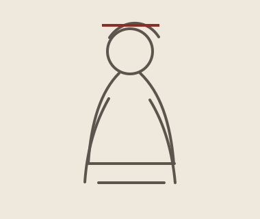

徐悲鴻款 駿馬図
¥13,000 税込
Retro日和は、作品を販売するだけでなく、中国絵画の時代・画家・形式・画題を学びながら、自分に合う一幅と出会える中国書画専門店です。


絵画は時代とともに変化します。宮廷、文人、都市文化、美術教育。背景を知ると、一幅の見え方も変わります。

文字以前の造形から帛画・墓室壁画・画像石へ。中国絵画の源流をたどります。…

人物画論と線描表現が体系化され、後世の人物画・鑑賞論の基礎が形づくられた時代。…

南北の文化が統合され、唐代絵画へつながる過渡期。青緑山水の展開を考えるうえでも重要で…
人物画・宗教画・宮廷絵画が大きく発展し、山水画も独立した表現領域として成熟した時代。…

北方の雄大な山水と江南の湿潤な山水、宮廷花鳥画など、後の宋画につながる重要な様式が形…
宮廷画院と士大夫文化が並行して発展し、山水・花鳥・人物の各分野で中国絵画史の大きな高…
臨安を中心に宮廷画院が栄え、余白を生かした構図や詩意ある小景、禅僧による水墨表現が発…
掛軸だけではありません。手巻、冊頁、四条屏、横披、書法、画心など、中国書画には多様な鑑賞のかたちがあります。
肉筆作品と工芸品は、制作区分を明確に表示します。掲載写真と作品情報をご確認ください。
専門用語を知らなくても大丈夫。作品を見るときに役立つ基本知識を、小さな図解と一緒に紹介します。
店舗・EC・催事・インテリア・法人案件など、大口注文や継続的な仕入れにも対応。中国現地の仕入れ・工房ネットワークを活かし、用途・数量・ご予算に応じてご提案します。